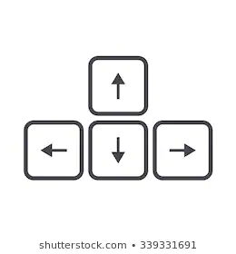

To Start
1.) Type in the name of your town and select your country from the drop down menu.
2.) Press the submit button.
3.) If the information is correct, the game will begin.
The Goal
Upon starting the game the current hours, minutes, and seconds of your selected town will hide somewhere in the game world. Your goal is to explore and collect them as fast as possible. You can collect the time by jumping on them.
Controls
Use the arrow keys

Left and right keys to move left and right, up key to jump